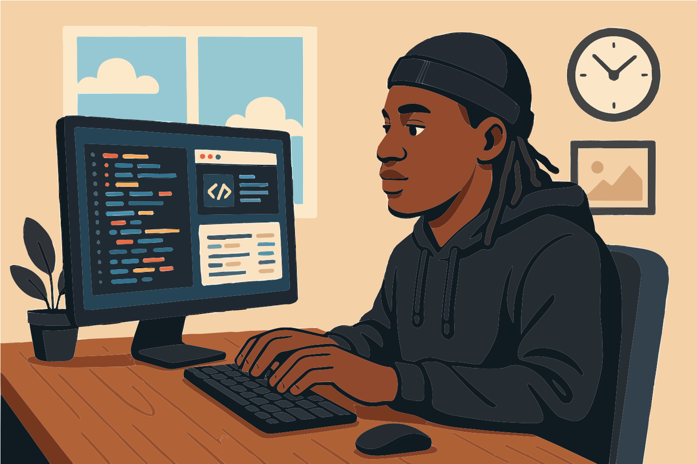

Hello! My name is Nico. I am an apprentice software engineer, I handle a mix of frontend and backend development tasks. I work for JTA travel.
Working in the travel industry is interesting to me as it allows me to use my passion for software development in a range of different ways ranging from booking systems to poster design to calculating staff bonuses.
Outside of work, I like to stay active in any way I can by playing sports , getting outside and going to the gym. I also enjoy listening to music and going to concerts. Aside from this I like to play video games, mainly sports games and single player games.